Meritocracy and distributive preferences ISSP
sábado 20 junio 2020 19:31:40
Por alagun motivo o encuentra la variable fi_index al hacer knirt pero si al usar all run. (en el comando cor con la base mer_pref_cor)
Libraries
library(sjPlot)
library(sjmisc) # several functions,ej read_stata
library(descr)
library(memisc) # codebook
library(psych) # cor2latex
library(corrplot) # graph correlations
library(lavaan)
library(stargazer)
library(semTools)
library(plyr) # count
library(dplyr)
library(car) # recode
library(ggplot2)
library(Hmisc)
library(tidyverse)
library(data.table)
library(stringr)
library(countrycode)
library(lme4)
library(texreg)
library(mice)
library(ggrepel) # for scatter labels in sjp.scatter
library(semPlot)
library(haven)
library(sjlabelled)
library(kableExtra)Load data
load(file = "input/data/proc/redistrib.rda")
load(file="input/data/proc/mer_pref.rda")1 Descriptives
# Summary table to latex
sink("output/results/desctab_red.html")
stargazer(redistrib[-c(1,2)], type="html"); sink()| Statistic | N | Mean | St. Dev. | Min | Pctl(25) | Pctl(75) | Max |
| income_dif | 54,400 | 3.875 | 1.089 | 1.000 | 3.000 | 5.000 | 5.000 |
| unemployed | 54,698 | 3.912 | 0.987 | 1.000 | 3.000 | 5.000 | 5.000 |
| taxes | 53,258 | 4.016 | 0.779 | 1.000 | 4.000 | 5.000 | 5.000 |
| health | 54,237 | 2.464 | 1.312 | 1.000 | 1.000 | 4.000 | 5.000 |
| educ | 54,220 | 2.502 | 1.321 | 1.000 | 1.000 | 4.000 | 5.000 |
1.1 plot likert

2 Estimación del modelo
load("input/data/proc/redistrib.rda")
cfa_red1 <- '
# latent variables
redist =~ income_dif + unemployed + taxes
accum =~ health + educ'
fit_red1 <- cfa(cfa_red1,data=redistrib, missing = "ML")
#summary(fit_red1, fit.measures=TRUE,standardized=TRUE)
#fitmeasures(fit_red1)2.1 Measurement structure
# Path
# dev.copy("output/results/path_red1.png",width=750,height=600)
semPlot::semPaths(fit_red1,layout = "tree2", rotation = 2,
intercepts = FALSE, style = "lisrel", curvePivot = TRUE,
cardinal = TRUE)
# dev.off() 2.1.1 Fit cfa model
sum_fit<- bind_rows(fitmeasures(fit_red1)[c("chisq","df","cfi","rmsea","rmsea.ci.lower","rmsea.ci.upper")])
colnames <- c("$\\chi2$","df","CFI","RMSEA","RMSEA CI lower", "RMSEA CI upper")
sumtable01<- kable(sum_fit,digits = 3,format = "html",row.names = F,booktabs=T, caption = "Summary fit indices wave 01",col.names = colnames,escape = FALSE) %>%
kable_styling(full_width = F) %>%
collapse_rows(columns = 1,valign = "middle");sumtable01| \(\chi2\) | df | CFI | RMSEA | RMSEA CI lower | RMSEA CI upper |
|---|---|---|---|---|---|
| 269.229 | 4 | 0.996 | 0.034 | 0.031 | 0.038 |
2.1.2 Diagram model
# Path - with results
semPlot::semPaths(fit_red1,"std",layout = "tree2", rotation = 2,
intercepts = FALSE, style = "lisrel", curvePivot = TRUE,
cardinal = TRUE, edge.color = "black", residScale = 10)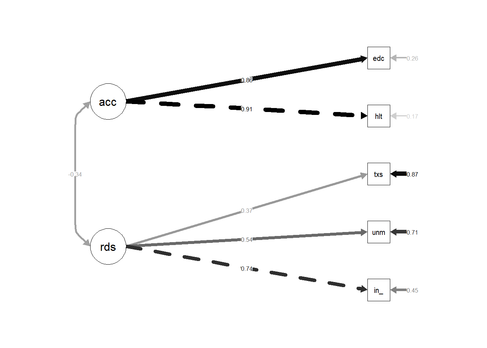
# dev.copy(png,"output/results/path_red1_res.png",
# width=750,height=600); dev.off()
# Categorical
fit_red1c <- cfa(cfa_red1,data=redistrib,
ordered = c("income_dif","unemployed","taxes", "health",
"educ"))
# summary(fit_red1c, fit.measures=TRUE,standardized=TRUE)
# 2.2 MODELS A: MERIT & REDISTRIB
# 4.1 Merge objects --------------------- ----
load("input/data/proc/redistrib.rda")
load("input/data/proc/getahead.rda")
load("input/data/proc/detearn.rda")
aux1 <- merge(getahead,redistrib,by=c("id","v5"))
merit_redist=merge(aux1,detearn,by=c("id","v5"))2.3 Measurement & structural mode
2.3.1 Measurement simple
cfa_mer_red1 <- '
# latent variables
merit =~ hwork + ambition
parent=~ wealthy + pareduc
backg=~ race + gender
network=~ people + polcone
bmerit =~ welljob + hardjob
need=~ family + child
redist =~ income_dif + unemployed + taxes
accum =~ health + educ'
fit_mer_red1 <- cfa(cfa_mer_red1,data=merit_redist,missing = "ML")
# summary(fit_mer_red1, fit.measures=TRUE,standardized=TRUE)
fit_mer_red1c <- cfa(cfa_mer_red1,data=merit_redist,
ordered = names(merit_redist[3:10,19:29]))
# summary(fit_mer_redc, fit.measures=TRUE,standardized=TRUE)
sum_fit<- bind_rows(fitmeasures(fit_mer_red1)[c("chisq","df","cfi","rmsea","rmsea.ci.lower","rmsea.ci.upper")],
fitmeasures(fit_mer_red1c)[c("chisq","df","cfi","rmsea","rmsea.ci.lower","rmsea.ci.upper")])
sum_fit$mod <- c("Model 1","Model 2")
sum_fit$est <- c("MLR","DWLS")
#sum_fit <- select(sum_fit,mod,est,everything())
colnames <- c("Model","Estimator","$\\chi2$","df","CFI","RMSEA","RMSEA CI lower", "RMSEA CI upper")
sumtable01<- kable(sum_fit,digits = 3,format = "html",row.names = F,booktabs=T, caption = "Summary fit indices wave 01",col.names = colnames,escape = FALSE) %>%
kable_styling(full_width = F) %>%
collapse_rows(columns = 1,valign = "middle") %>%
footnote(number = c("Model 1: Continue item",
"Model 2: Ordered item)"));sumtable01| Model | Estimator | \(\chi2\) | df | CFI | RMSEA | RMSEA CI lower | RMSEA CI upper |
|---|---|---|---|---|---|---|---|
| 4521.284 | 91 | 0.979 | 0.030 | 0.029 | 0.031 | Model 1 | MLR |
| 1966.626 | 91 | 0.996 | 0.026 | 0.025 | 0.027 | Model 2 | DWLS |
| 1 Model 1: Continue item | |||||||
| 2 Model 2: Ordered item) |
# Path
# dev.copy(png,"output/results/path_mer_red1.png",width=800,height=650)
semPlot::semPaths(fit_mer_red1,layout = "circle", rotation = 3,
intercepts = FALSE, style = "lisrel", curvePivot = TRUE,
sizeMan = 4, sizeLat = 6)
# dev.off() # CFA with secon order unmerit
cfa_mer_red2 <- '
# latent variables
merit =~ hwork + ambition
parent=~ wealthy + pareduc
backg=~ race + gender
network=~ people + polcone
bmerit =~ welljob + hardjob
need=~ family + child
redist =~ income_dif + unemployed + taxes
accum =~ health + educ
unmerit =~ parent + backg + network
'
fit_mer_red2 <- cfa(cfa_mer_red2,data=merit_redist,
missing = "ML")
# summary(fit_mer_red2, fit.measures=TRUE,standardized=TRUE)sum_fit<- bind_rows(fitmeasures(fit_mer_red2)[c("chisq","df","cfi","rmsea","rmsea.ci.lower","rmsea.ci.upper")])
colnames <- c("$\\chi2$","df","CFI","RMSEA","RMSEA CI lower", "RMSEA CI upper")
sumtable01<- kable(sum_fit,digits = 3,format = "html",row.names = F,booktabs=T, caption = "Summary fit indices wave 01",col.names = colnames,escape = FALSE) %>%
kable_styling(full_width = F) %>%
collapse_rows(columns = 1,valign = "middle");sumtable01| \(\chi2\) | df | CFI | RMSEA | RMSEA CI lower | RMSEA CI upper |
|---|---|---|---|---|---|
| 5771.437 | 101 | 0.973 | 0.032 | 0.031 | 0.033 |
3 Correlation factor scores
# Factor scores
fscores <- as.data.frame(lavPredict(fit_mer_red2))
# Correlations
cormat=cor(fscores[c(7,8,1,9,5,6)],
use="pairwise.complete.obs")
corrplot.mixed(cormat)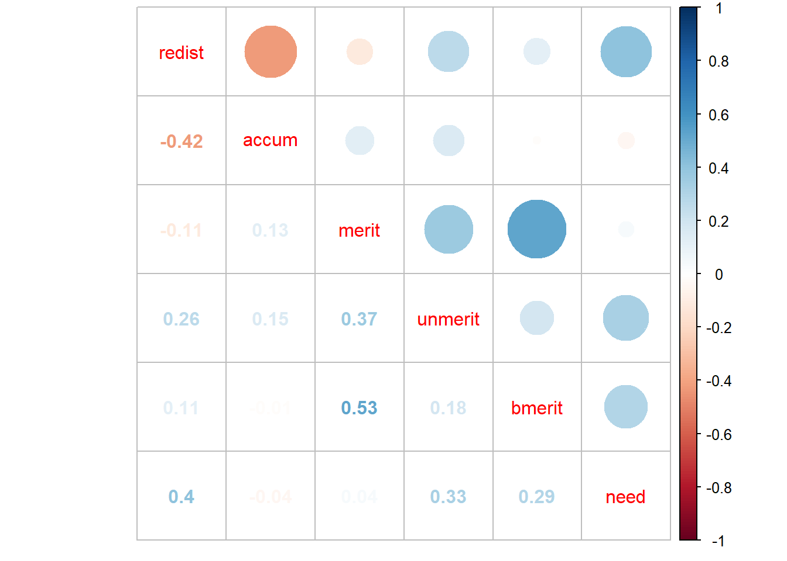
#save
# dev.copy(png,"output/results/corplot_totscores.png",width=600,
# height=600); dev.off() # Path
semPlot::semPaths(fit_mer_red2,layout = "tree", rotation = 2,
intercepts = FALSE, style = "lisrel", curvePivot = TRUE,
sizeMan = 4, sizeLat = 6)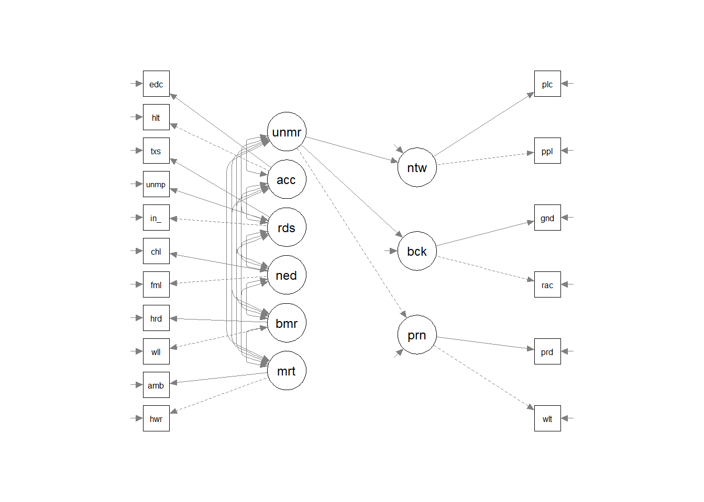
# dev.copy(png,"output/results/path_mer_red2.png",width=800,
# height=650); dev.off()
# Structural model
sem_mer_red1 <- '
# latent variables
merit =~ hwork + ambition
parent=~ wealthy + pareduc
backg=~ race + gender
network=~ people + polcone
bmerit =~ welljob + hardjob
need=~ family + child
redist =~ income_dif + unemployed + taxes
accum =~ health + educ
unmerit =~ parent + backg + network
# regressions
redist + accum ~ merit + unmerit + bmerit + need
'
fitsem_mer_red1 <- sem(sem_mer_red1,data=merit_redist,
missing = "ML")
# summary(fitsem_mer_red1, fit.measures=TRUE,standardized=TRUE)
# Path
semPlot::semPaths(fitsem_mer_red1,layout = "tree", rotation = 2,
intercepts = FALSE, style = "lisrel", curvePivot = TRUE,
sizeMan = 4, sizeLat = 6)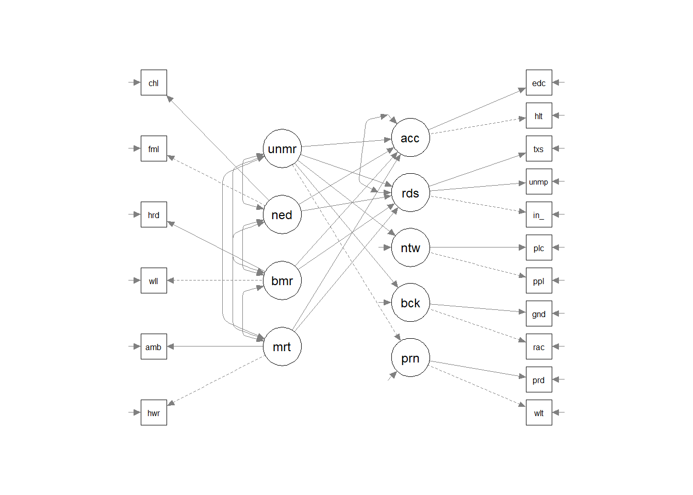
# dev.copy(png,"output/results/path_mer_red2.png",width=800,
# height=650); dev.off()
# saque este argumento del codigo de abajo op=="~"
# Table
tabreg=subset(standardizedsolution(fitsem_mer_red1) ,op=="~", select=c(lhs,rhs,est.std,z))
tabreg2=subset(tabreg, select=c(lhs,rhs,est.std,z))
tabredist=subset(tabreg2,lhs=="redist",
select=rhs:z)
tabaccumt=subset(tabreg2,lhs=="accum",select=est.std:z)
tabtot=cbind(tabredist,tabaccumt)
tabtot2=rbind(tabtot$est.std,tabtot$z)4 Descriptives
load("input/data/proc/pref_agg.rda")
plot_scatter(pref_agg, gini_net, accum,
dot.labels = pref_agg$v5c,
fit.line = "lm",
show.ci = TRUE)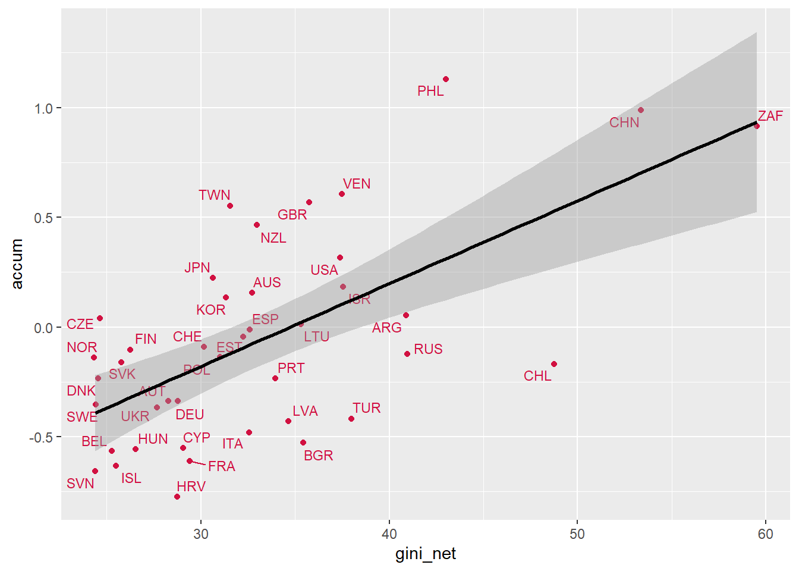
#table(pref_agg$redis)
plot_scatter(pref_agg, gini_net, redist,
dot.labels = pref_agg$v5c,
fit.line = lm,
show.ci = TRUE )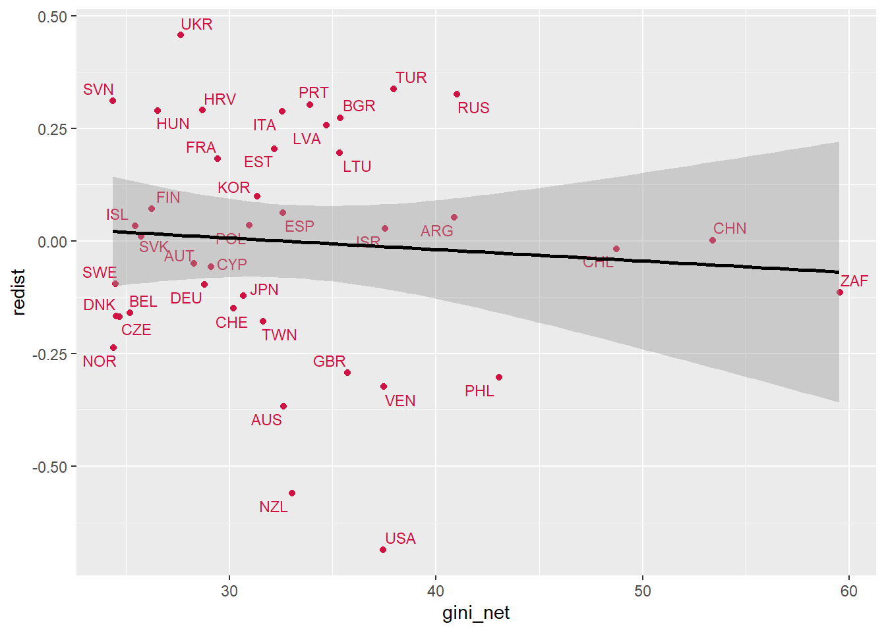
# Sin ZAF outlier (igual, no cambia)
pref_agg2 <- pref_agg[which(pref_agg$v5c!='ZAF'), ]
plot_scatter(pref_agg2, gini_net, redist,
dot.labels = pref_agg2$v5c,
fit.line = lm,
show.ci = TRUE
)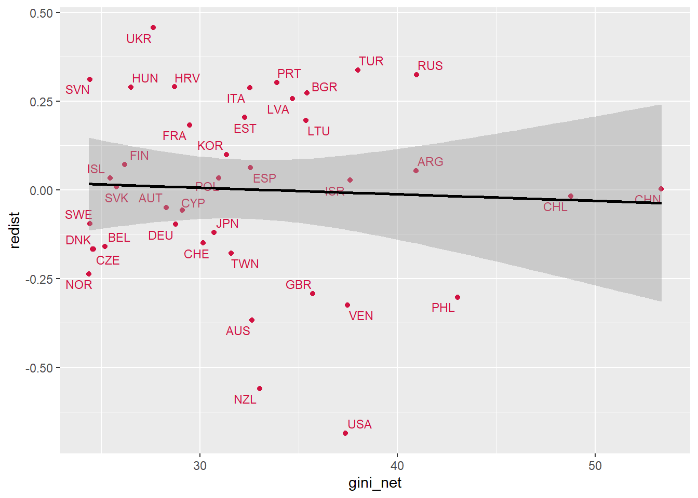
5 Models
# Models SEM simple
load("input/data/proc/pref.rda")
prefb<-pref[,-c(9:10)]
sem_b <- '
# latent variables
redist =~ income_dif + unemployed + taxes
accum =~ health + educ
redist + accum ~ univ + quintile + sstatus + gini_market'
fit_2c <- sem(sem_b,data=prefb, ordered = c("income_dif",
"unemployed","taxes", "health", "educ"))
#summary(fit_2c, fit.measures=TRUE,standardized=TRUE)
sum_fit<- bind_rows(fitmeasures(fit_2c)[c("chisq","df","cfi","rmsea","rmsea.ci.lower","rmsea.ci.upper")])
colnames <- c("$\\chi2$","df","CFI","RMSEA","RMSEA CI lower", "RMSEA CI upper")
sumtable01<- kable(sum_fit,digits = 3,format = "html",row.names = F,booktabs=T, caption = "Summary fit indices wave 01",col.names = colnames,escape = FALSE) %>%
kable_styling(full_width = F) %>%
collapse_rows(columns = 1,valign = "middle");sumtable01| \(\chi2\) | df | CFI | RMSEA | RMSEA CI lower | RMSEA CI upper |
|---|---|---|---|---|---|
| 528.003 | 16 | 0.998 | 0.028 | 0.026 | 0.03 |
5.1 Multilevel (with factor scores)
funciona con el pref viejo, al nuevo le falta gini_market
5.1.1 check simple regresion
ols_prefred=lm(redist ~ univ + quintile + sstatus + .dots...gini_mkt, data = mer_pref)
stargazer(ols_prefred, type = "html") # ok, similar SEM, scores OK##
## <table style="text-align:center"><tr><td colspan="2" style="border-bottom: 1px solid black"></td></tr><tr><td style="text-align:left"></td><td><em>Dependent variable:</em></td></tr>
## <tr><td></td><td colspan="1" style="border-bottom: 1px solid black"></td></tr>
## <tr><td style="text-align:left"></td><td>redist</td></tr>
## <tr><td colspan="2" style="border-bottom: 1px solid black"></td></tr><tr><td style="text-align:left">univ</td><td>-0.133<sup>***</sup></td></tr>
## <tr><td style="text-align:left"></td><td>(0.008)</td></tr>
## <tr><td style="text-align:left"></td><td></td></tr>
## <tr><td style="text-align:left">quintile</td><td>-0.052<sup>***</sup></td></tr>
## <tr><td style="text-align:left"></td><td>(0.002)</td></tr>
## <tr><td style="text-align:left"></td><td></td></tr>
## <tr><td style="text-align:left">sstatus</td><td>-0.003<sup>***</sup></td></tr>
## <tr><td style="text-align:left"></td><td>(0.0003)</td></tr>
## <tr><td style="text-align:left"></td><td></td></tr>
## <tr><td style="text-align:left">.dots...gini_mkt</td><td>-0.008<sup>***</sup></td></tr>
## <tr><td style="text-align:left"></td><td>(0.0004)</td></tr>
## <tr><td style="text-align:left"></td><td></td></tr>
## <tr><td style="text-align:left">Constant</td><td>0.531<sup>***</sup></td></tr>
## <tr><td style="text-align:left"></td><td>(0.018)</td></tr>
## <tr><td style="text-align:left"></td><td></td></tr>
## <tr><td colspan="2" style="border-bottom: 1px solid black"></td></tr><tr><td style="text-align:left">Observations</td><td>44,841</td></tr>
## <tr><td style="text-align:left">R<sup>2</sup></td><td>0.035</td></tr>
## <tr><td style="text-align:left">Adjusted R<sup>2</sup></td><td>0.035</td></tr>
## <tr><td style="text-align:left">Residual Std. Error</td><td>0.635 (df = 44836)</td></tr>
## <tr><td style="text-align:left">F Statistic</td><td>406.772<sup>***</sup> (df = 4; 44836)</td></tr>
## <tr><td colspan="2" style="border-bottom: 1px solid black"></td></tr><tr><td style="text-align:left"><em>Note:</em></td><td style="text-align:right"><sup>*</sup>p<0.1; <sup>**</sup>p<0.05; <sup>***</sup>p<0.01</td></tr>
## </table>5.2 Multilevel models redist.
#table(pref_agg$v5c)
# Null
mlprefred_0 = lmer(redist ~ 1 + (1 | v5c), data = mer_pref)
htmlreg(mlprefred_0) # de library texreg | Model 1 | |
|---|---|
| (Intercept) | -0.01 |
| (0.04) | |
| AIC | 98898.29 |
| BIC | 98925.03 |
| Log Likelihood | -49446.14 |
| Num. obs. | 55021 |
| Num. groups: v5c | 40 |
| Var: v5c (Intercept) | 0.06 |
| Var: Residual | 0.35 |
| p < 0.001; p < 0.01; p < 0.05 | |
5.3 Esta seccion no me funciona.
#sjPlot::plot_model(mlprefred_0, type = c("re")) ### ¿Que grafico se quiere #hacer?##univ_g en la preparacion aparece este objeto, es un centrado. agregar.
# ICC
varcomp=as.data.frame(VarCorr(mlprefred_0))
tau00=varcomp[1,4]
sigma2=varcomp[2,4]
tau00/(tau00+sigma2)[1] 0.1527326
# Individual level varsH
mlprefred_1 = lmer(redist ~ 1 + univ +
as.factor(quintile_miss) + sstatus + sex + age +
(1 | v5.x), data=mer_pref)
htmlreg(mlprefred_1)| Model 1 | |
|---|---|
| (Intercept) | -0.00 |
| (0.04) | |
| univ | -0.11*** |
| (0.01) | |
| as.factor(quintile_miss)2 | -0.04*** |
| (0.01) | |
| as.factor(quintile_miss)3 | -0.08*** |
| (0.01) | |
| as.factor(quintile_miss)4 | -0.13*** |
| (0.01) | |
| as.factor(quintile_miss)5 | -0.22*** |
| (0.01) | |
| as.factor(quintile_miss)6 | -0.14*** |
| (0.01) | |
| sstatus | -0.00*** |
| (0.00) | |
| sex | 0.05*** |
| (0.01) | |
| age | 0.00*** |
| (0.00) | |
| AIC | 95964.71 |
| BIC | 96071.52 |
| Log Likelihood | -47970.35 |
| Num. obs. | 54213 |
| Num. groups: v5.x | 40 |
| Var: v5.x (Intercept) | 0.06 |
| Var: Residual | 0.34 |
| p < 0.001; p < 0.01; p < 0.05 | |
sjPlot::plot_model(mlprefred_1, type = c("est")) 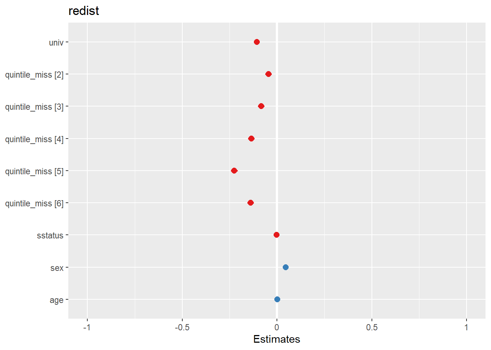
# # Macro level vars
mlprefred_2 = lmer(redist ~ 1 + univ +
as.factor(quintile_miss)+ sstatus + .dots...gini_mkt +
univ_g + (1 | v5c), data = mer_pref)
screenreg(mlprefred_2)======================================== Model 1
—————————————- (Intercept) 0.64 *
(0.31)
univ -0.71
(0.55)
as.factor(quintile_miss)2 -0.04 (0.01)
as.factor(quintile_miss)3 -0.07 (0.01)
as.factor(quintile_miss)4 -0.13 (0.01)
as.factor(quintile_miss)5 -0.22 (0.01)
as.factor(quintile_miss)6 -0.14 (0.01)
sstatus -0.00 (0.00)
.dots…gini_mkt -0.01
(0.01)
univ_g 0.60
(0.55)
—————————————- AIC 96948.54
BIC 97055.44
Log Likelihood -48462.27
Num. obs. 54634
Num. groups: v5c 40
Var: v5c (Intercept) 0.06
Var: Residual 0.34
======================================== *** p < 0.001; ** p < 0.01; * p < 0.05
6 # Multilevel models accumulation
# # Multilevel models accumulation
# Null
mlaccum_0 = lmer(accum ~ 1 + (1 | v5c), data = mer_pref)
htmlreg(mlaccum_0) # de library texreg | Model 1 | |
|---|---|
| (Intercept) | -0.06 |
| (0.07) | |
| AIC | 154831.23 |
| BIC | 154857.98 |
| Log Likelihood | -77412.62 |
| Num. obs. | 55021 |
| Num. groups: v5c | 40 |
| Var: v5c (Intercept) | 0.22 |
| Var: Residual | 0.97 |
| p < 0.001; p < 0.01; p < 0.05 | |
# Graph
#plot_model(mlaccum_0)
#
# ICC
varcomp=as.data.frame(VarCorr(mlaccum_0))
tau00=varcomp[1,4]
sigma2=varcomp[2,4]
tau00/(tau00+sigma2)## [1] 0.1854516# # Individual level vars
mlaccum_1 = lmer(accum ~ 1 + univ + as.factor(quintile_miss) +
sstatus + sex + age + univ*sex + age*age + (1 | v5.x), data =mer_pref)
screenreg(mlaccum_1)======================================== Model 1
—————————————- (Intercept) -0.04
(0.08)
univ 0.17 (0.02)
as.factor(quintile_miss)2 0.00
(0.01)
as.factor(quintile_miss)3 0.05 (0.01)
as.factor(quintile_miss)4 0.11 (0.01)
as.factor(quintile_miss)5 0.21 (0.02)
as.factor(quintile_miss)6 0.09 (0.01)
sstatus 0.00 (0.00)
sex -0.10 (0.01)
age -0.00 (0.00)
univ:sex -0.08 (0.02)
—————————————- AIC 151789.30
BIC 151905.01
Log Likelihood -75881.65
Num. obs. 54213
Num. groups: v5.x 40
Var: v5.x (Intercept) 0.22
Var: Residual 0.96
======================================== * p < 0.001; ** p < 0.01; * p < 0.05
plot_model(mlaccum_1, type = c("est")) ### 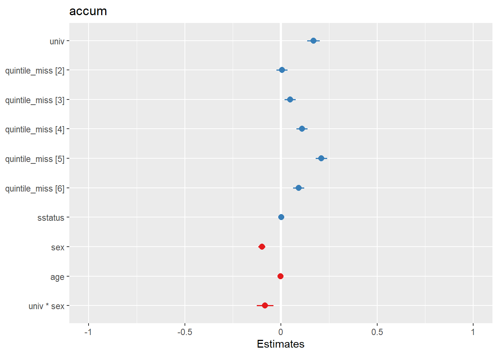
# Macro level vars
mlaccum_2 = lmer(accum ~ 1 + univ_g + as.factor(quintile_miss) +
(sstatus -f_sstatus) + .dots...gini_disp + (1 | v5.x), data=mer_pref)
screenreg(mlaccum_2)======================================== Model 1
—————————————- (Intercept) -1.46 (0.29)
univ_g 0.13 (0.01)
as.factor(quintile_miss)2 -0.00
(0.01)
as.factor(quintile_miss)3 0.04 ** (0.01)
as.factor(quintile_miss)4 0.11 (0.01)
as.factor(quintile_miss)5 0.21 (0.02)
as.factor(quintile_miss)6 0.09 (0.01)
sstatus 0.01 (0.00)
.dots…gini_disp 0.04 (0.01)
—————————————- AIC 150875.29
BIC 150973.11
Log Likelihood -75426.64
Num. obs. 53785
Num. groups: v5.x 40
Var: v5.x (Intercept) 0.15
Var: Residual 0.96
======================================== p < 0.001; ** p < 0.01; * p < 0.05
# Random slope & cross-level
mlaccum_3 = lmer(accum ~ 1 + univ_g + f_sstatus + .dots...gini_disp +
.dots...gini_disp*f_sstatus + (1 + f_sstatus | v5.x), data=mer_pref)
screenreg(mlaccum_3) ============================================== Model 1
———————————————- (Intercept) -1.66 (0.32)
univ_g 0.15 (0.01)
f_sstatus 0.06 *
(0.02)
.dots…gini_disp 0.04 (0.01)
f_sstatus:.dots…gini_disp -0.00
(0.00)
———————————————- AIC 150874.04
BIC 150954.07
Log Likelihood -75428.02
Num. obs. 53785
Num. groups: v5.x 40
Var: v5.x (Intercept) 0.17
Var: v5.x f_sstatus 0.00
Cov: v5.x (Intercept) f_sstatus -0.00
Var: Residual 0.96
============================================== p < 0.001; ** p < 0.01; * p < 0.05
# End sec. 5 ---------------------------- # # Graphs
plot_model(mlaccum_3, type = "est")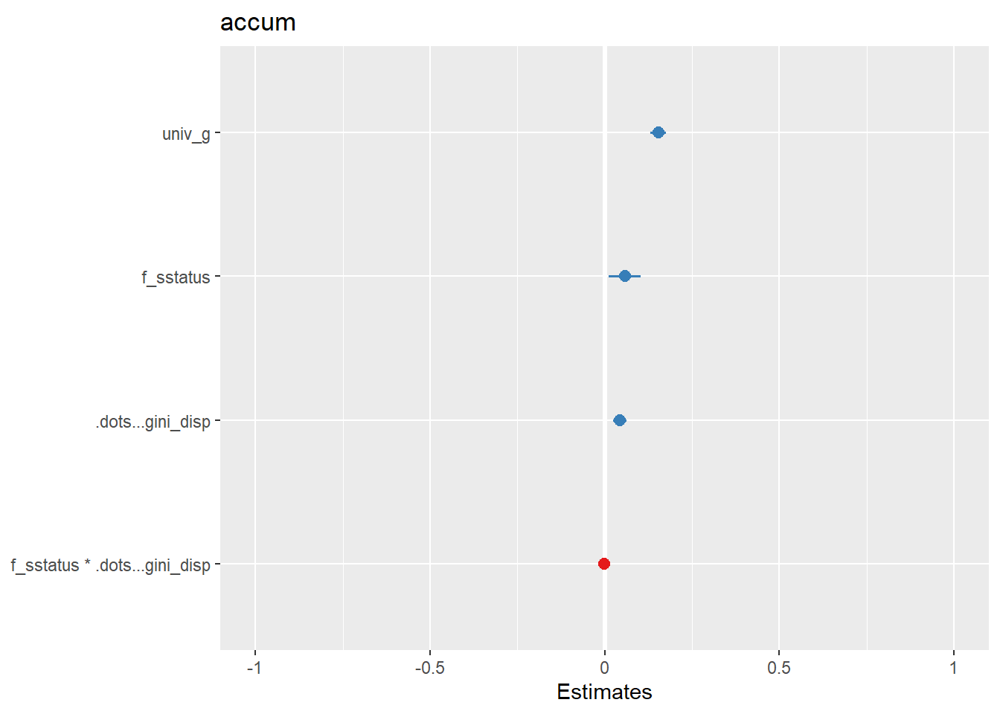
plot_model(mlaccum_3, type = "int")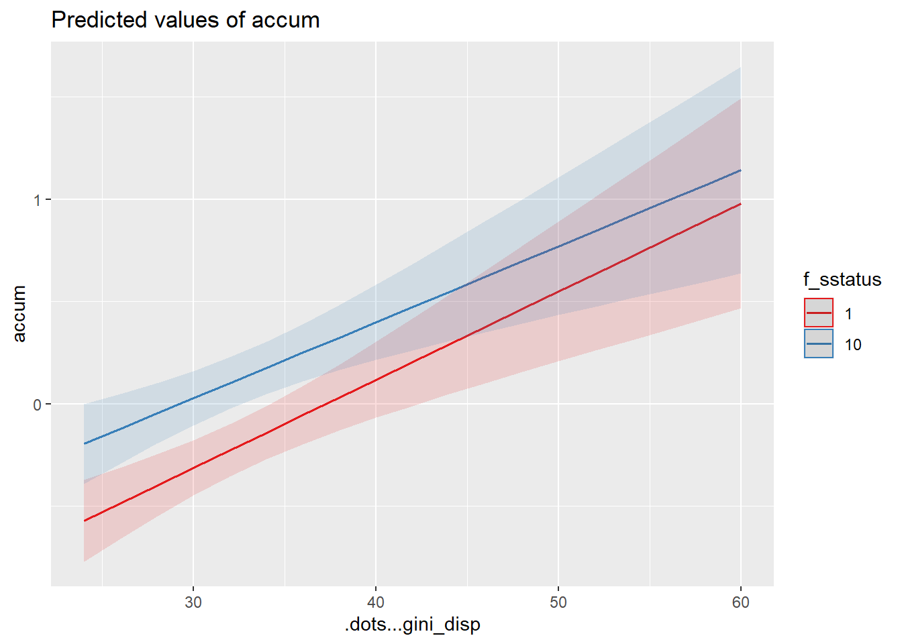
mlaccum_4 = lmer(accum ~ 1 + univ + f_sstatus + .dots...gini_disp + .dots...gini_disp*f_sstatus + hhincome + (1 + hhincome | v5), data= mer_pref)
screenreg(mlaccum_4)=========================================== Model 1
——————————————- (Intercept) -2.22 (0.56)
univ 0.10 (0.01)
f_sstatus 0.06 (0.01)
.dots…gini_disp 0.06 (0.02)
hhincome 0.00
(0.00)
f_sstatus:.dots…gini_disp -0.00 ** (0.00)
——————————————- AIC 124239.05
BIC 124326.06
Log Likelihood -62109.52
Num. obs. 44401
Num. groups: v5 40
Var: v5 (Intercept) 1.71
Var: v5 hhincome 0.00
Cov: v5 (Intercept) hhincome 0.00
Var: Residual 0.95
=========================================== *** p < 0.001; ** p < 0.01; * p < 0.05
sjPlot::plot_model(mlaccum_4, type = c("est"))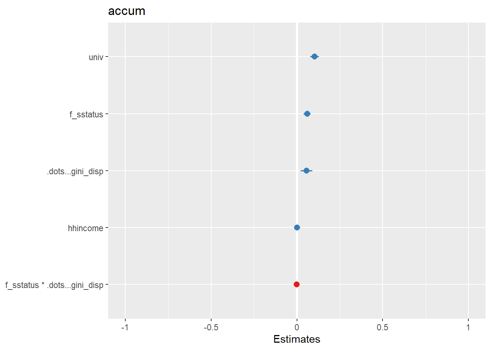
sjPlot::plot_model(mlaccum_4, type = c("int"))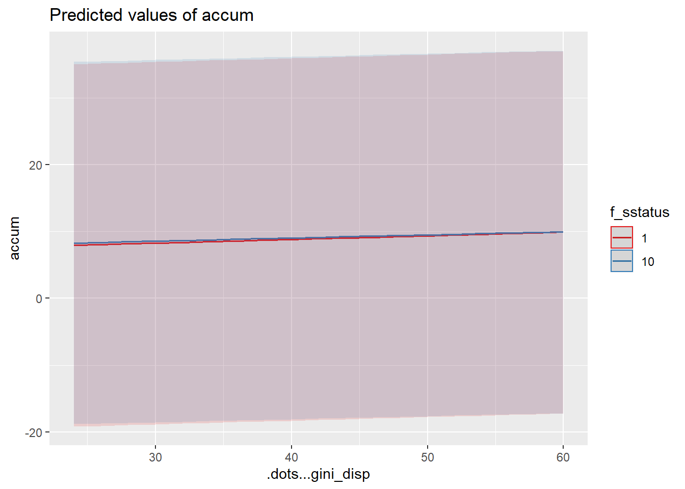
7 MODELS C: MERITOCRACY
7.1 Macro Descriptives
load("input/data/proc/meritocracy.rda")
# Adjust data
merit_agg=aggregate(meritocracy, by=list(meritocracy$v5c),
FUN=mean, na.rm=TRUE)
names(merit_agg)[names(merit_agg)=="Group.1"]="v5c"
# names(merit_agg)
# dim(merit_agg)7.1.1 Macro level corr
load("input/data/proc/mer_pref_polycor.rda")
corMat <- cor(mer_pref_polycor, use="pairwise.complete.obs")
corrplot.mixed(corMat)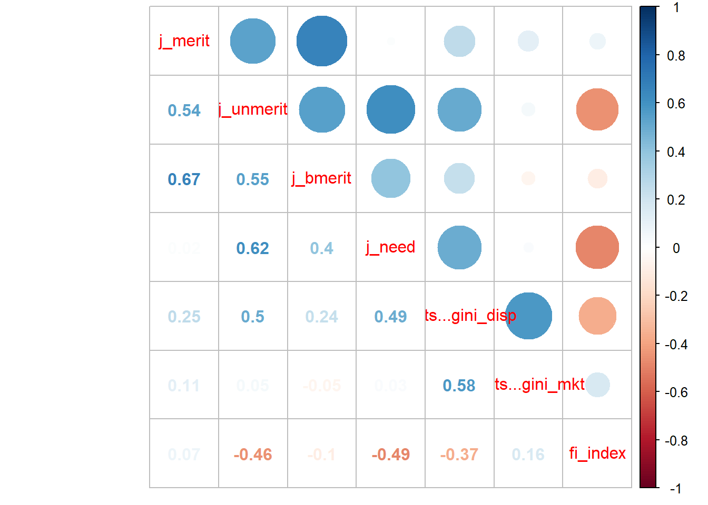
plot_scatter(merit_agg, gini_net, j_bmerit,
dot.labels = merit_agg$v5c,
fit.line = "lm",
show.ci = TRUE)
# Save
# dev.copy(png,"output/results/gini_bmerit.png")
plot_scatter(merit_agg, gini_net,unmerit,
dot.labels = merit_agg$v5c,
fit.line = "lm",
show.ci = TRUE) 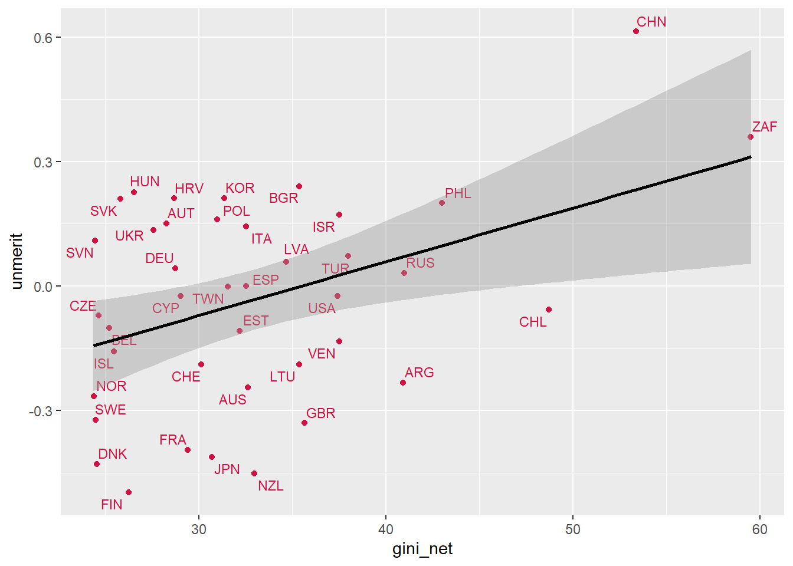
# dev.off()#dev.copy(png,"output/results/fi_need.png");
plot_scatter(merit_agg, gini_net,need,
dot.labels = merit_agg$v5c,
fit.line = "lm",
show.ci = TRUE) 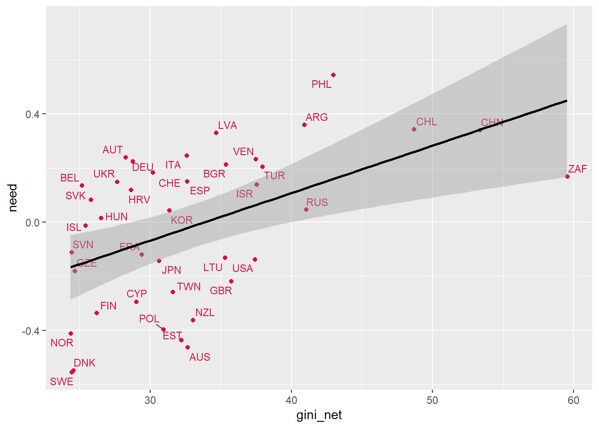
#dev.off() # dev.copy(png,"output/results/gini_fi.png")
plot_scatter(merit_agg, j_fi_index, need,
dot.labels = merit_agg$v5c,
fit.line = "lm",
show.ci = TRUE) 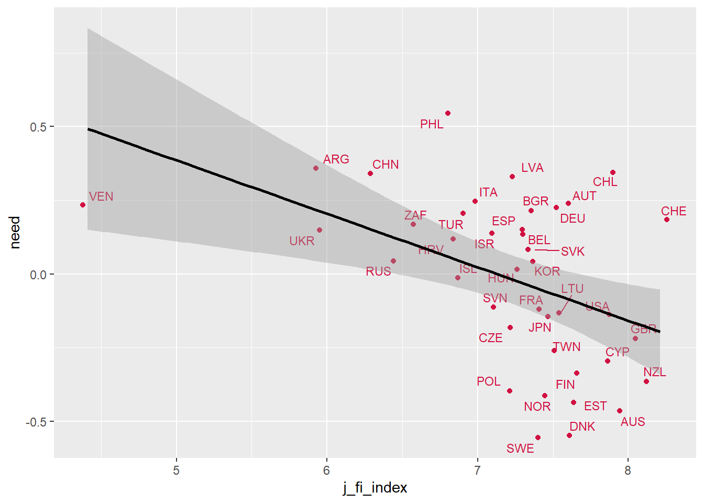
# dev.off()7.1.1.1 Graficos sin outliers
merit_agg2 <- merit_agg[which(merit_agg$v5c!="ZAF" & merit_agg$v5c!="CHN" & merit_agg$v5c!="CHL" ), ]
plot_scatter(merit_agg2, gini_net, unmerit,
dot.labels = merit_agg2$v5c,
fit.line = TRUE,
show.ci = TRUE
) 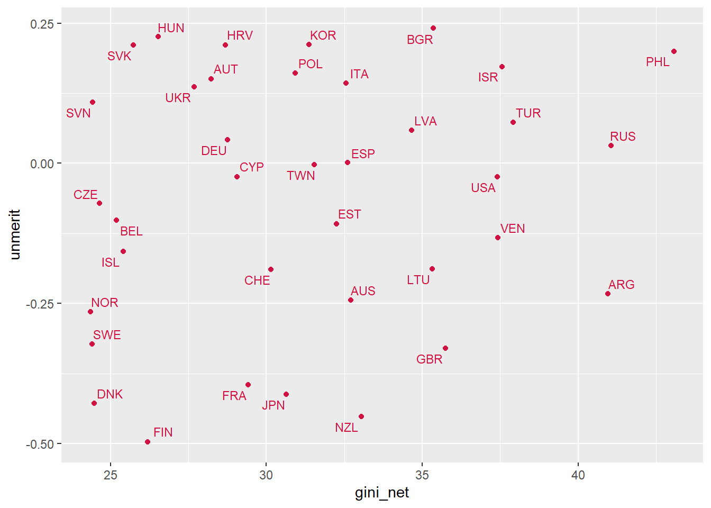
7.2 Models
7.2.1 Multilevel (with factor scores)
load("input/data/proc/meritocracy.rda")
# Adjust some variables
meritocracy$Quintile=as.factor(meritocracy$quintile_miss)
levels(meritocracy$Quintile)[6] <- "miss"7.2.1.1 check simple regresion
ols_merit=lm(merit ~ univ + quintile + sstatus + .dots...gini_disp, data = mer_pref)
stargazer(ols_merit, type ="html") # ok, similar SEM, scores OK| Dependent variable: | |
| merit | |
| univ | 0.058*** |
| (0.006) | |
| quintile | 0.007*** |
| (0.002) | |
| sstatus | 0.0003 |
| (0.0002) | |
| .dots…gini_disp | 0.005*** |
| (0.0003) | |
| Constant | -0.198*** |
| (0.010) | |
| Observations | 44,841 |
| R2 | 0.010 |
| Adjusted R2 | 0.010 |
| Residual Std. Error | 0.466 (df = 44836) |
| F Statistic | 116.894*** (df = 4; 44836) |
| Note: | p<0.1; p<0.05; p<0.01 |
8 Multilevel models merit
8.1 Null Model
mlmerit_0 = lmer(merit ~ 1 + (1 | v5c), data = mer_pref)
htmlreg(mlmerit_0) # de library texreg | Model 1 | |
|---|---|
| (Intercept) | -0.01 |
| (0.03) | |
| AIC | 66323.60 |
| BIC | 66350.34 |
| Log Likelihood | -33158.80 |
| Num. obs. | 55021 |
| Num. groups: v5c | 40 |
| Var: v5c (Intercept) | 0.03 |
| Var: Residual | 0.19 |
| p < 0.001; p < 0.01; p < 0.05 | |
# Graph
# sjp.lmer(mlmerit_0, sort.est="(Intercept)") No encuentro el paquete.
# ICC
varcomp=as.data.frame(VarCorr(mlmerit_0))
tau00=varcomp[1,4]
sigma2=varcomp[2,4]
tau00/(tau00+sigma2)## [1] 0.1138443 # Individual level vars
mlmerit_1 = lmer(merit ~ 1 + univ + quintile_miss +
sstatus + sex + age + (1 | v5), data = mer_pref)
htmlreg(mlmerit_1)| Model 1 | |
|---|---|
| (Intercept) | 0.01 |
| (0.03) | |
| univ | 0.04*** |
| (0.01) | |
| quintile_miss | 0.01*** |
| (0.00) | |
| sstatus | -0.00 |
| (0.00) | |
| sex | -0.01 |
| (0.00) | |
| age | -0.00*** |
| (0.00) | |
| AIC | 65201.22 |
| BIC | 65272.43 |
| Log Likelihood | -32592.61 |
| Num. obs. | 54213 |
| Num. groups: v5 | 40 |
| Var: v5 (Intercept) | 0.02 |
| Var: Residual | 0.19 |
| p < 0.001; p < 0.01; p < 0.05 | |
# Macro level vars
mlmerit_2 = lmer(bmerit ~ 1 + .dots...gini_disp + (1 | v5), data = mer_pref)
htmlreg(mlmerit_2) | Model 1 | |
|---|---|
| (Intercept) | -0.04 |
| (0.04) | |
| .dots…gini_disp | 0.00 |
| (0.00) | |
| AIC | -16224.40 |
| BIC | -16188.74 |
| Log Likelihood | 8116.20 |
| Num. obs. | 55021 |
| Num. groups: v5 | 40 |
| Var: v5 (Intercept) | 0.00 |
| Var: Residual | 0.04 |
| p < 0.001; p < 0.01; p < 0.05 | |
9 Models meritocracy and preferences
#Se agrega la base de datos dejando paises como
mer_pref_agg=aggregate(mer_pref, by=list(mer_pref$v5c),
FUN=mean, na.rm=TRUE)
names(mer_pref_agg)[names(mer_pref_agg)=="Group.1"]="v5c"
# names(mer_pref_agg)
# dim(mer_pref_agg)
plot_scatter(mer_pref_agg,merit , bmerit,
dot.labels = mer_pref_agg$v5c,
fit.line = lm,
show.ci = TRUE)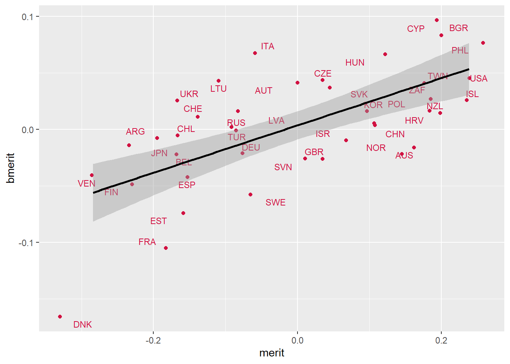
plot_scatter(mer_pref_agg, merit, redist,
dot.labels = mer_pref_agg$v5c,
fit.line = lm,
show.ci = TRUE) 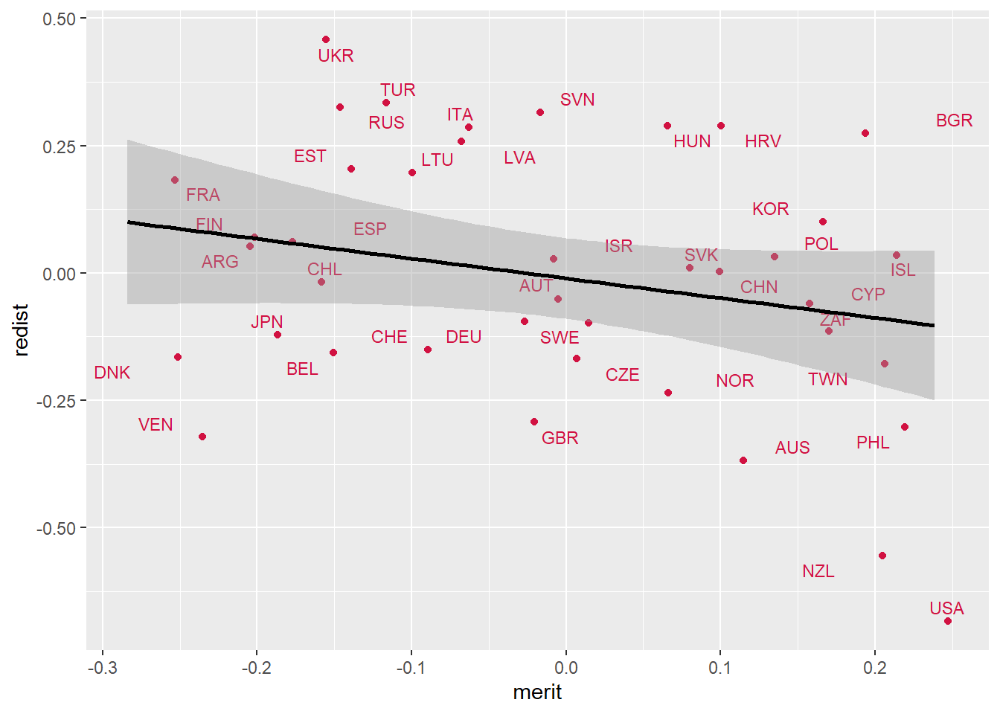
# Save
# dev.copy(png,"loc_merit_pref_int/results/merit_redis.png"); dev.off()
plot_scatter(mer_pref_agg, unmerit,redist,
dot.labels = mer_pref_agg$v5c,
fit.line = "lm",
show.ci = TRUE) 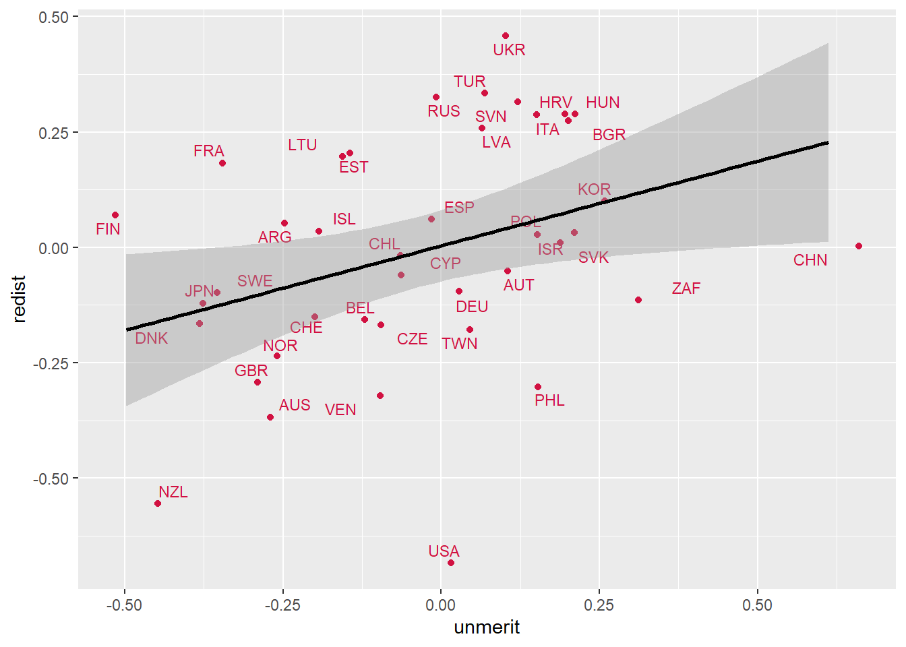
# Save
# dev.copy(png,"loc_merit_pref_int/results/unmerit_redis.png"); dev.off()
# plot_scatter(mer_pref_agg$redist,mer_pref_agg$accum)
plot_scatter(mer_pref_agg, redist,accum,
dot.labels = mer_pref_agg$v5c,
fit.line = "lm",
show.ci = TRUE) 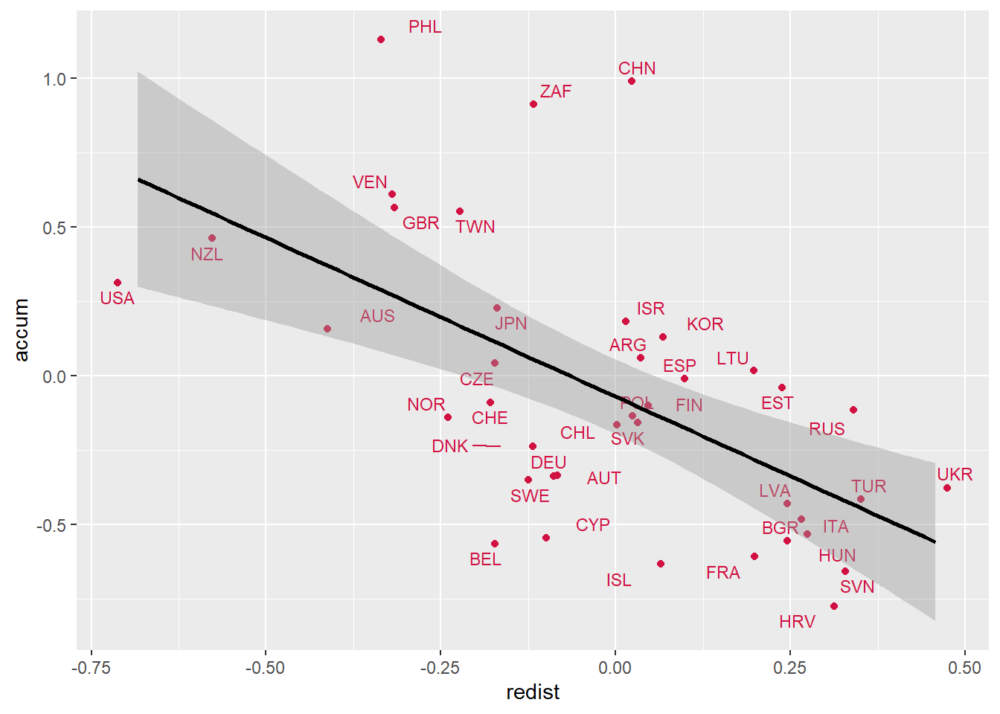